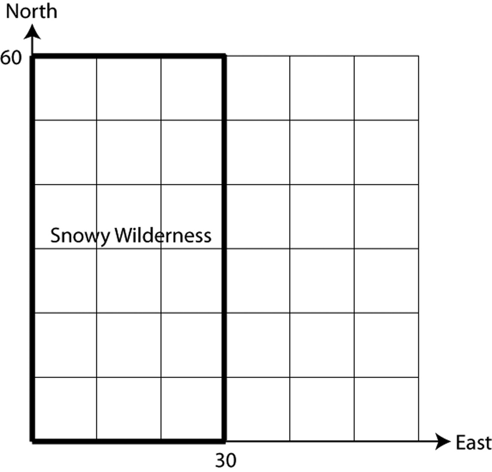
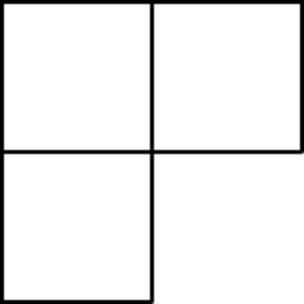

{% raw %}

<article>

  <section class="development">


    <h2>Introduction</h2>

    <p>An explorer is lost in the 30 by 60 mile rectangular section
    of snowy wilderness shown below. The search and rescue team
    knows that she started her journey at the southwest corner, and
    since there hasn’t been any new snow for a while, they also
    know that they’ll be able to see her tracks.</p>
    
 <figure class="fig-50">
    
  </figure>
    
    <p>Obviously, the team wants to find the lost explorer as
    quickly as possible. There are different ideas about how to do
    this, though, so they decide to split into
    two groups. Group A will start at the southwest corner and
    simply follow the explorer’s trail. Group B, though, has a
    different strategy. Here’s what they do:</p>

    <div class="problem">
      <p>Group B starts out at $\left( {0,30} \right)$, and
      walks directly east. Every
      time they cross the explorer’s trail, they make a note of it.
      Suppose that by the time they reach the eastern border,
      they’ve crossed the explorer’s trail 5 times. What can they
      conclude about where the explorer must be now? How about if
      they’d crossed the trail 8 times?</p>
    </div>

    <div class="problem">
      <p>As you can see, Group B’s west-to-east walk allows them to
      cut the remaining search area in half. Their idea is to keep
      repeating this until they’ve narrowed down the search area to
      a small horizontal strip. Suppose that on the first walk
      (along $y = 30$), they crossed the trail 3 times.</p>

      <p class="problem-part">What horizontal line should they
      walk next?</p>

      <p class="problem-part">Now, suppose that on the second
      walk, they cross the
      explorer’s trail 6 times. Where could the explorer possibly
      be? Demonstrate your answer by drawing a picture of one such
      trail the explorer could have taken.</p>
    </div>

    <div class="problem allow-break">

      <p>Is Group B’s strategy better than Group A’s? To help you
      answer this question, determine approximately how long each
      one would take to find the lost explorer in each of
      the following scenarios. (Assume that each group moves at the
      same speed, and that as soon as a group comes within
      a mile or so, they’ll see the explorer’s signal flares.)</p>
            <aside class='continued'></aside>

      <p class="problem-part">
        <figure class="fig-50">
    
  </figure>
      </p>

      <p class="problem-part new-page">
        <figure class="fig-50">
          
        </figure>
      </p>

      <p class="problem-part">  <figure class="fig-50">
    
  </figure>
      </p>
    </div>

    <h2>Development</h2>

    <p>The two strategies in the situation above are both examples
      of <em class="vocab">algorithms</em>— though, of course, Group A’s is a rather
    simple one. An <em class="vocab">algorithm</em> is simply a clearly defined,
    step-by-step process for accomplishing a desired task. You can
    think of every algorithm as having three main parts: input,
    process and output. In the search and rescue situation, for
    example, the input would be the whole search area and the
    explorer’s trail, and the output would be the explorer’s
    location.</p>

    <p>As you can hopefully see, thinking about and analyzing
    algorithms can be
    useful in situations where there are multiple possible
    approaches, and we want the “best” or most efficient one. But
    this kind of thinking isn’t only useful in practical
    applications — it’s also a source of some classic games and
    puzzles.</p>

    <div class="problem">
      <p>The Number Devil is thinking of an integer between 1 and
      63 (inclusive), and your job is to guess it. If you guess
      wrong, the Number Devil will tell you (truthfully) whether
      your guess is too low or too high. Come up with a strategy
      for finding the Number Devil’s number in as few guesses as
      possible.</p>
    </div>

    <p>Was there anything in common between your strategy in the
    previous problem and Group B’s approach to finding the missing
    explorer? Group B’s strategy — and, likely, yours — is an
    example of a <em class="vocab">binary search</em> algorithm. (The Latin root $bini$ means “two-by-two”.) Here’s another application of it.</p>

    <div class="problem">
      <p>Your English teacher has an alphabetized stack of 15
      papers,
      but she’s forgotten whose papers she collected. Now, she
      needs to check and see if she has Gabi’s paper in the stack.
      She decides to use a binary search algorithm.</p>

      <p class="problem-part">Simulate this with your group: have
      a group member make an alphabetized list of names without
      showing you. The list maker gets to decide whether or not
      “Gabi” is in the list. You, in the role of the teacher, can
      ask for any individual name in the list (e.g., “Who is the
      fifth person in the list?”). How many times do you have to
      ask before you can be sure whether or not Gabi’s name is in
      the stack?</p>

      <p class="problem-part">Make up an alphabetized list of 15
      names that would
      force the teacher’s binary search process to make the most
      guesses possible. This is called a “worst case” input for
      the
      algorithm. How many guesses does the algorithm take,
      in the worst case?</p>
    </div>

    <div class="problem">
      <p>Now, you decide to play a little trick on the teacher.
      Carefully rearrange the ordering of names you made in part
      b of the previous problem so that, when your teacher uses
      binary search, she’ll end up mistakenly concluding that
      Gabi’s paper is not in the stack.</p>
    </div>

    <p>Based on what happened in problem 6, it’s clear that there
    are certain situations in which the binary search algorithm
    isn’t appropriate. This is always true: every algorithm makes
    some assumptions about its input.</p>

    <div class="problem">
      <p>What assumption(s) did the teacher make in using her
      binary search algorithm?</p>
    </div>

    <p class="new-page">In addition to thinking carefully about the input, it’s also
    helpful when working with algorithms to identify the <em class="vocab">basic operations</em> your algorithm can use. The basic operations are
    always based on the situation you’re dealing with: they are
    the
    actions you’re able to do as a single “step” of your algorithm.
    In the Number Devil game, for example, your basic operation was
    to guess a number and find out if it was correct, too big, or
    too small. In the stack of papers example,
    the basic operation was to check the name on a single paper in
    the stack and compare it alphabetically with the name ‘Gabi’.
    The basic operation in the
    following game is similar to these two, but slightly
    different.</p>

    <div class="problem">
      <p>Play the following game with a classmate:</p>
    

    <p class="Development---Problem-Flow">Your partner should write
    five different numbers on slips of paper. Then shuffle the
    papers and put them face down on the table in a straight
    row.</p>

    <p class="Development---Problem-Flow">You are the guesser. Your
    job is to figure out which paper has the largest number written
    on it. But you can never
    see the numbers themselves — you can only ask for
    comparisons. For example, you could point to the first
    slip and the fourth slip, and your classmate would have
    to tell you which one has the larger number.</p>

    <p class="Development---Problem-Flow">Each comparison counts as
    one step, and your goal is to find the paper with the largest
    number with as few steps as possible.</p>

    <p class="problem-part">Play the game and identify the paper
    with the largest
    number. How many steps did it take before you were
    certain about your answer?</p>

    <p class="problem-part">Describe, in detail, an algorithm for
    finding the largest
    number in a list of numbers, using as few comparisons
    as possible.</p>
      
      </div>
    
    <div class="problem">
      <p>Aaron has an algorithm that he claims can find the largest
      number every time using only three comparisons. Either figure
      out Aaron’s algorithm, or explain why it’s impossible.</p>
    </div>

    <p class="new-page">Here’s a somewhat different algorithmic puzzle that many
    consider a “modern classic.” (In fact, the story goes that,
    before it got out onto the Internet, this was a question that
    Google interviewers asked of potential employees.)</p>

    <p>You have two perfectly identical eggs. You need to figure
    out how high an egg can fall from a 100-story building before
    it breaks. You know nothing about the toughness of the eggs;
    they may be very fragile and break when dropped from the first
    floor. On the other hand, they may be super tough genetically
    altered eggs, so tough that that dropping them from the 100th
    floor doesn’t even cause a scratch. The only thing you know for
    sure is that they both have exactly the same “toughness.”</p>

    <div class="problem">
      <p>Joey takes his first egg, and drops it off of the fourth
      floor. It doesn’t break. Then, he goes up and drops it off
      the tenth floor, and it shatters spectacularly on the
      sidewalk. Finally, he takes his second (and last) egg, and
      drops it off the seventh floor. It breaks. What can Joey
      conclude about the toughness of his eggs?</p>
    </div>

    <div class="problem">
      <p>Come up with a strategy for figuring out your eggs’
      toughness. Your job is to guarantee the smallest
      number of egg-drops, in the worst case. You are
      allowed to break both eggs, but remember, two is all
      you get!</p>
    </div>

    <h2 class="new-page">Practice</h2>

    <div class="problem">
      <p>You have 16 identical-looking coins. Fifteen of them have
      exactly the same weight, and one is too heavy. Describe
      an algorithm for finding the heavy coin in as few steps as
      possible. The basic operation allowed is to use a simple
      balance to compare 2 piles of coins to see which pile is
      heavier.</p>
    </div>

    <div class="problem">
      <p>In the algorithm you use for adding two very large numbers
      by hand, what are the basic operations? How about multiplying
      two numbers by hand? Dividing?</p>
    </div>

    <div class="problem">
      <p>Describe the mental algorithm a street vendor might
      use
      to quickly make change for a $\$20$ bill. Make sure your
      algorithm works by testing it out the following sale amounts:
      $\$1.50$, $\$3.00$, $\$11.45$, $\$17.26$.</p>
    </div>

    <div class="problem">
      <p>Write an algorithm for finding someone’s age based on
      their birth date and the current date. (For instance, Tom’s
      birth date is 6/14/90 and today’s date is …. so Tom is ….
      years old.)</p>
    </div>

    <div class="problem">
      <p>Recall the Number Devil game from problem 4. Now let’s say
      you’re trying to guess a number between 1 and 255. If you
      were going to play using the binary search algorithm, what
      would be one worst-case number that the Number Devil could
      choose?</p>
    </div>

    <div class="problem">
      <p>Consider the following strategy to the egg-drop
      problem:</p>
  
    <p class="Development---Problem-Flow"><em>Starting at floor 1,
    drop the first egg off of odd-numbered floors until it breaks.
    Then, go back down one floor and drop the second egg. If it
    breaks, that’s the answer. If not, then the floor above is the
      answer.</em></p>

    <p class="Development---Problem-Flow">Say you get to decide how
    tough the eggs are, and you want to force the strategy above to
    make the largest possible number of drops before it
    succeeds.</p>

    <p class="problem-part">What is the worst-case
    input for this strategy?
    i.e., how tough should you make the eggs?</p>

    <p class="problem-part"> What’s the worst-case
    number of drops?</p>
    </div>

    <h2>Going Further</h2>

    <p>The algorithms we’ve worked with so far dealt with lists of
    information, whether they were lists of numbers, names, phone
    numbers, etc. Now, we’re going to look at algorithms that
    transform a single item, such as a number, word, etc.</p>

    <div class="problem">
      <p>You and your friend are planning to share lockers, so as
      soon as you get your combinations, you plan to exchange them
      over the phone. Each combination has three numbers in it –
      for example, 11 – 2 – 41.</p>

      <p>In case someone might be listening, though, you agree ahead
      of time to use the following algorithm to encrypt each number
      in the combination:</p>

      <p>      ${\mathop{\rm EncryptNumber}\nolimits} \left( N \right)$:</p>
      <p>If $N$ is odd, then output $2 + N$.<br>
      Otherwise, output $2 \cdot N$.</p>
 

    <p class="Development---Problem-Flow">Notice that the notation
    being used here is similar to the “function notation” that
    you’ve seen in some previous
    lessons. “EncryptNumber” is the name of the algorithm, and $N$ is
    a name for the input to the algorithm.</p>

    <p class="problem-part">Your combination is 12 – 7 – 11. What
    should you tell
    your friend?</p>

    <p class="problem-part">Your friend tells you 80 – 28 – 29.
    What was her
    combination?</p>
    </div>

    <div class="problem">
      <p>Your brother wants to use the same system with his friend,
      but he’s confused about how it’s possible to “decrypt” the
      numbers he receives. Give him detailed instructions for a
      “DecryptNumber” algorithm that he can use to understand what
      his friend tells him.</p>
    </div>

    <p>One convenient feature of using function notation is that we
    can use it to easily write down things about what an algorithm
    does for specific inputs. For example, we can write
    ${\rm{EncryptNumber}}\left( 4 \right) = 8$, or
    ${\rm{DecryptNumber}}\left( 8 \right) = 4$.</p>

    <div class="problem">
      <p>What is ${\rm{DecryptNumber}}\left( {13} \right)$? How
      about ${\rm{DecryptNumber}}\left( {24} \right)$? And
      ${\rm{DecryptNumber}}\left( {18} \right)$?</p>
    </div>

    <div class="problem">
      <p>Predict what would happen if you applied the EncryptNumber
      algorithm to each of your three answers in the previous
      problem. Then try it out to test your prediction.</p>
    </div>

    <p>When you use an algorithm to encode a message so that no
    strangers can understand it, it’s called an “encryption”
    algorithm. This is essentially what a computer does when you
    enter a password or other personal information on a website, so
    that nobody besides the website owner can see it.</p>

    <p>Another kind of encoding is called “compression”. With
    compression, the idea is to shrink the size of a message down
    so it’s faster to transport. This is why mp3’s are such a big
    deal: they allow you to compress very large song files so that
    they’re small enough to download quickly.</p>

    <div class="problem">
      <p>Emmett wants to compress all the old emails he’s saved on
      his computer. Thinking of the shorthand he sometimes uses for
      text messages, he decides to go through each message and
      remove all the vowels and all the spaces. One problem with
      this approach is that it simply doesn’t shrink the message by
      all that much. However, there’s a much deeper problem. What
      is it? Can you suggest an alternative method for compressing
      Emmett’s emails?</p>
    </div>

    <div class="problem">
      <p>What are some characteristics that would make a good
      compression algorithm? What characteristics are absolutely
      necessary?</p>
    </div>

    <p>You saw with the compression and encryption algorithms above
      that they’re only useful if they also have <em>de</em>compression and
      <em>de</em>cryption algorithms to go with them. These are two examples
      of a more general type of algorithm called an <em class="vocab">inverse</em>
      algorithm. When you have two algorithms, and each one reverses
      the other, then the two algorithms are called <em class="vocab">inverses</em> of each
    other. Using this language, we can say the major flaw in
    Emmett’s compression algorithm was that it has no inverse
    algorithm. (Why not?)</p>

    <div class="problem">
      <p>You want to share your gym locker with a different friend
      from the one in problem 18. But she and your other friend
      don’t get along, so you need a different code for this
      locker. Here’s the one you use:</p>

    <p class="Narrative-Block">${\mathop{\rm GymCode}\nolimits}
    \left( N \right)$:<br><br>

    If $N$ is odd, then output $2N$.<br>
    Otherwise, if $N$ is a multiple of 4, output $N + 1$.<br>
    Otherwise, output $2N + 3$.</p>

    <p class="Development---Problem-Flow">Write an inverse for this
    algorithm called GymDecode.</p>
    </div>

    <p>Now, let’s say you wanted to write down all your passwords
    so you don’t forget them. Since someone else might see the
    paper, you decide to encrypt all the
    passwords so that only you will know what they really are.</p>

    <p>You’ve already got two encryption algorithms: EncryptNumber
    from problem 18 and GymCode from problem 24. So you can just
    combine the two to create the SuperSecretCode algorithm, as
    follows:</p>

    <p class="Narrative-Block">${\mathop{\rm
    SuperSecretCode}\nolimits} \left( N \right)$:<br>
      
    Output ${\mathop{\rm EncryptNumber}\nolimits} \left(
    {{\mathop{\rm GymCode}\nolimits} \left( N \right)} \right)$.</p>

    <p>Recall that ${\mathop{\rm GymCode}\nolimits} \left( N
    \right)$ just means “the output of GymCode when you
    input $N$”. Similarly, “${\mathop{\rm EncryptNumber(GymCode}\nolimits} \left( N
    \right))$” means, “the output
    of EncryptNumber when you input ${\mathop{\rm
    GymCode}\nolimits} \left( N \right)$”.</p>

    <div class="problem">
      <p>What is the value of ${\mathop{\rm
      SuperSecretCode}\nolimits} \left( {14} \right)$? (Hint:
      first
      figure out the value of ${\mathop{\rm GymCode}\nolimits}
      \left( {14} \right)$, and then use
      substitution.)</p>
    </div>

    <div class="problem">
      <p>Write the inverse algorithm, SuperSecretDecode.</p>
    </div>

    <h2>Practice</h2>

    <div class="problem">
      <p>I have three bags, two with marbles in them (bags A and B)
      and one without (bag C).

      First, I take half the marbles in bag A and add them to bag
      B. Then I recount the marbles in bag B, take out half, and
      put them in bag C.

      You know that when I’m done, the contents of the bags are as
      follows:</p>

      <p>Bag A: 10 marbles<br>
        Bag B: 20 marbles<br>
        Bag C: 20 marbles
      </p>

<p>      Find out how many marbles were in the bags originally.</p>
    </div>

    <div class="problem">
      <p>Write an inverse algorithm to reverse the following
      process:
      Take a number and add 4 to it. Then multiply your answer by
      3. Finally, subtract 1 from your answer.</p>
    </div>

    <div class="problem">
      <p>Is there an inverse for an algorithm that sorts a list of
      numbers in ascending order? (“Ascending order” just means
      from least to greatest.)</p>
    </div>

    <div class="problem">
      <p>An algorithm takes a number, multiplies it by 2, and then
      adds 5. If the output from the algorithm is $X$, what was its
      input, in terms of $X$?</p>
    </div>

    <div class="problem">
      <p>Write an inverse algorithm to reverse the following
      process:
      Take an integer between 1 and 99. If it’s a 2-digit number,
      multiply it by 5. If it’s a 1-digit number, multiply it by 10
      and then add 1.
      (Try the process on a few different numbers first.)</p>
    </div>

    <div class="problem">
      <p>The ShiftCipher algorithm is a simple way of encrypting a
      word. Here’s how it works:</p>

      <p>Take a word, such as DOOR. Shift the first letter once – D
      becomes E.
      Then, since D is the 4th letter of the alphabet, shift all
      the other letters 4 times – OOR becomes SSV.
      If at any point you hit Z and need to go past it, then just
      wrap back around to A.
      So, ShiftCipher(“DOOR”) = “ESSV”.
      (Another example: ShiftCipher(“EYES”) = “FDJX” –
      try it).</p>

<p>      Write the DecryptShiftCypher algorithm.</p>
    </div>
  </section>

 

  <section class="problems">
  <h2>Problems</h2>
    <div class="problem">
      <p>You always set your alarm clock to wake you up one hour
      before you have to leave. But if you have to leave before 7
      am, you give yourself 15 extra minutes to get ready since you
      know you’ll be groggy.</p>

      <p class="problem-part">What’s the input for the
      process
      described above? What’s its output?</p>

      <p class="problem-part">What time would you have to leave
      if the clock woke you up at 5:40am? 5:50am?</p>

      <p class="problem-part">Your alarm wakes you up. Based on
      the time you see on the clock, how do you know when you’ll
      have to leave?</p>
    </div>

    <div class="problem allow-break">
      <p>You’ve got a stack of five pancakes, all of different
      sizes. Your only tool is a spatula, and the only basic
      operation allowed is: insert the spatula beneath any pancake
      in the stack and flip the whole section of the stack that’s
      above the spatula onto the remaining stack below. Your job is
      to sort the stack so that the smallest pancake ends up on top
      and the pancakes increase in size as you go down the
      stack.</p>

  <figure>
 
  </figure>

    <div style="column-break-after: always;">&nbsp;</div>

    <p class="problem-part">Sort each of the following
      stacks,
      using as few flips as possible.
    </p>

    <ol class="subparts">
      <li><br><figure class="fig-50">
          
      </figure></li><br>
      <li><br><figure class="fig-50">
          
      </figure></li><br>
      <li><br><figure class="fig-50">
          
      </figure></li>
    </ol>

      <p class="problem-part">Write a general algorithm for
      sorting any stack, and try it out on a few different initial
      arrangements of pancakes.</p>

      <p class="problem-part">Make up a worst-case initial
      arrangement of five pancakes for your algorithm. How many
      flips does your algorithm take in the worst case?</p>
    </div>

    <div class="problem">
      <p>You’ve lost your calculator, and your
      diabolical arch nemesis has decided
      to exploit this opportunity. He’ll
      make calculations for you — for a
      price! Multiplication costs $\$1$, whereas
      exponentiation costs $\$6$. Unfortunately, you desperately need
      to compute ${7^{10}}$, and you’ve only got $\$5$. What will
      you do?</p>
    </div>

    <div class="problem">
      <p>You input any word, and the
      AlphaBlast algorithm outputs the
      same word but with all the ‘a’s replaced with ‘z’s. Is
      AlphaBlast reversible?
      Example: AlphaBlast(“mathematics”) = “mzthemztics”. Test it
      carefully and then explain your answer. (An algorithm is
        called <em class="vocab">reversible</em> if it’s possible to create an inverse
      algorithm for it.)</p>
    </div>

    <div class="problem">
      <p>For each of the following algorithms,
      assume that the input can be any number, and call it $X$.
      Read each description, and decide in each case whether the
      algorithm is reversible. If so, write the inverse.</p>

      <p class="problem-part">The Foo algorithm either multiplies
      $X$ by 2 (if it’s a whole number) or doesn’t change it (if
      it’s not a whole number).</p>

      <p class="problem-part">The Bar algorithm either multiplies
      $X$ by 2 (if it’s NOT a whole number) or doesn’t change it
      (if it IS a whole number).</p>

      <p class="problem-part">The FractionsAreFun algorithm takes
        <nobr>$X$,</nobr> adds 10, and divides that answer by 4, and outputs the
      result.</p>

      <p class="problem-part">The NoReallyTheyAre algorithm
      divides $X$ by 20 then adds 1 and
      outputs the result.</p>

      <p class="problem-part">The Flip algorithm outputs the
      value of 100/$X$, unless $X$ is zero, in which case the
      output is just zero.</p>

      <p class="problem-part">The Flop algorithm divides 20 by
      $X$, then adds 1 and outputs the result.</p>

      <p class="problem-part">The Square algorithm simply outputs
      the value of ${X^2}$.</p>
    </div>

    <div class="problem">
      <p>Here’s a variation on the Number Devil game: the Number
      Devil is allowed to change its secret number after each time
      you guess. However, it can’t change it in a way that makes
      any of its previous answers untrue. (So, if you guessed “5”
      the first time and the answer was “higher”, it could not
      change its answer to “2”, but it $could$ change it to
      “7”.)</p>

      <p class="problem-part">Explain why binary search
      algorithm’s worst-case guarantee
      is still the same.</p>

      <p class="problem-part">Describe an algorithm the Number
      Devil could use to force a worst-case outcome every time, as
      long as you didn’t get lucky and guess right the first
      time.</p>
    </div>

    <div class="problem">
      <p>Here’s a tougher variation of the game you played in
      problem 8. The setup is the same: your partner shuffles the
      cards and lines them up, and you can’t look at them. But now,
      instead of just finding the largest one, your goal is to sort
      all the cards into descending order (i.e., line them up from
      largest to smallest). Your basic operations are (i) to ask
      your partner to compare two cards (just like last time), and
        (ii) to swap the positions of any two cards.</p>
      <p>Write an algorithm for this game. That is, create an
      algorithm that will sort a list of 5 numbers. After writing
      the algorithm, go ahead and try it out with a group member.
      Does it work?</p>
    </div>

    <div class="problem">
      <p>Look back at your pancake-flipping algorithm from problem
      34. If you extended your algorithm to stacks of $N$ pancakes,
      how many flips, maximum, could you
      guarantee it taking — that is, what’s the worst it could
      do?</p>
    </div>

    <div class="problem">
      <p>Here’s a different version of the pancake problem. This
      time, you have three plates. Plate #1 has a stack of 5
      pancakes, in order from the largest one on the bottom to the
      smallest on top. This time, though, you can only use the
      spatula to shift one pancake at a time to another plate. At
      no time can any larger pancake be on top of a smaller
      pancake. How many moves does it take to get the entire stack
      of pancakes from Plate #1 to Plate #3?</p>
    </div>

    <div class="problem">
      <p>Don’t use a calculator for this problem.</p>

      <p class="problem-part">Simplify
      $\frac{{20{a^4}{b^7}}}{{30{a^3}{b^{ - 2}}}}$</p>

      <p class="problem-part">Reduce the fraction $\frac{x^3 +2x}{x^2 + x}$</p>

      <p class="problem-part">Solve for $x$: ${x^{\frac{2}{3}}} =
      64$</p>

      <p class="problem-part">Solve for $x$: ${x^2} + 8x + 9 = 0$ </p>

      <p class="problem-part">Solve for $x$: $3{x^2} + 7x + 3 =
      0$</p>
    </div>

    <div class="problem">
      <p>If you double the size of a list in which you’re doing a
      binary search, will it (in the worst-case scenario) take you
      about twice as long to do the search?</p>
    </div>

    <div class="problem">
      <p>The shape below is called a “tromino.”

  <figure class="fig-25">
    
  </figure>
</p>

<p>      Each of the following “checkerboards” has had one square
  removed. For each board, find a way to cover <em>all</em> of the
      remaining squares with trominoes.</p>

      <p class="problem-part">
          <figure class="fig-50">
    
        </figure></p>

      <p class="problem-part">
  <figure class="fig-50">
    
        </figure></p>

   <p class="problem-part">
  <figure class="fig-50">
    
  </figure></p>

      <nobr>
   <p class="problem-part">
  <figure class="fig-50">
    
     </figure></p></nobr>

    </div>

    <div class="problem">
      <p>You have only a compass and an unmarked straightedge. Come
      up with an algorithm for finding a point equidistant from
      three given points. In doing so, you will have proven that it
      is always possible to find such a point.</p>
    </div>

    <div class="problem">
      <p>Alice is in the top right square of a giant chessboard,
      and the white rabbit she’s chasing is in the bottom left
      square. Each turn, Alice gets to move one square up, down,
      left, or right. Then, after that, the white rabbit gets to
      move (up, down, left, or right). Alice catches the rabbit
      when she’s able to move into the square he’s
      sitting in. Assuming that both Alice and the white rabbit are
      strategically quite savvy, predict the outcome.</p>
    </div>

    <div class="problem">
      <p>The Floor operation takes any number whatsoever as an
      input. ${\mathop{\rm Floor}\nolimits} (x)$ simply takes $x$ and returns the greatest integer that’s less than or equal to
      $x$. In other words, the Floor function always “rounds down.”
      Examples: ${\mathop{\rm Floor}\nolimits} (2.001) = 2$,
      $\mathrm{Floor}(\pi ) = 3$, and $\mathrm{Floor}(5.9999)=5$.</p>

      <p>The following algorithm, which uses Floor and some basic
      arithmetic operations, only takes positive integers for its
      input. What does it do?
</p>

<p>      ${\mathop{\rm Mystery}\nolimits} (n) = 5\left( {\frac{n}{5} -
      {\mathop{\rm Floor}\nolimits} \left( {\frac{n}{5}} \right)}
      \right)$</p>
    </div>

    <div class="problem">
      <p>The RightShift and LeftShift operations work for any
      non-negative integers with five or fewer digits:</p>

      <p>${\mathop{\rm RightShift}\nolimits} (N,d)$ chops off the
      rightmost
      $d$ digits of $N$ and outputs the result.
      Example: ${\mathop{\rm RightShift}\nolimits} (3214,2) = 32$.</p>

<p>      ${\mathop{\rm Left}\nolimits} {\mathop{\rm Shift}\nolimits}
      (N,d)$ moves each digit $d$ places to the left, and fills in 0’s in the empty spaces;
      then, it chops off all
      but the last five digits. Examples:
      ${\mathop{\rm Left}\nolimits} {\mathop{\rm Shift}\nolimits}
      (75,3) = 75000$, and ${\mathop{\rm Left}\nolimits}
      {\mathop{\rm Shift}\nolimits} (3214,2) = 21400$.</p>

      <p class="problem-part">Starting with the number 6789, how
      can you use only the LeftShift and RightShift operations to
      end up with the number 7?</p>

      <p class="problem-part">Generalize your work from part a
      to create the PickADigit algorithm, where ${\mathop{\rm
      PickADigit}\nolimits} (N,d)$ outputs
      the $d$th digit of a positive integer $N$.</p>
    </div>

    <div class="problem">
      <p>What does the following algorithm do, assuming that $N$ is
      a positive, five-digit integer?</p>
      $$\begin{split}\rm{Ffleba}(N) &amp;= \rm{LeftShift}(N,2) \\
      &amp;+ 10 \cdot \rm{RightShift}(N,4) \\
      &amp;+ \rm{RightShift}(\rm{LeftShift}(N,1),4)
      \end{split}$$
    </div>

    <div class="problem">
      <p>You input a whole number to a certain
      algorithm. If it’s even, the algorithm doesn’t change the
      number. If it’s odd, the algorithm turns the number backwards
      — for example, 57 becomes 75. Is this algorithm
      reversible?</p>
    </div>

    <div class="problem">
      <p>Come up with a non-trivial numerical
      algorithm that reverses itself. In other words, come up with
        an algorithm Boing such that, for every $N$,<br> 
        $\text{(Boing(Boing}(N))= N$.</p>
    </div>

    <div class="problem">
      <p>Imagine your friend gave you a very long table of $all$ the possible inputs to her algorithm and their corresponding
      outputs. Even if she didn’t explain the process
      her algorithm used, describe using a single sentence how you
      could figure out whether
      or not the algorithm was reversible.</p>
    </div>

    <div class="problem">
      <p>Your basic operations for the following
      are addition, subtraction, multiplication, division, and
      testing which of two
      numbers is the biggest.</p>

      <p class="problem-part">Write an algorithm for figuring out
      whether or not a positive integer $N$ is prime. Pick some
      three-digit numbers and try it out. (By the way, computer
      systems actually use algorithms like these to encrypt your
      private data.)</p>

      <p class="problem-part">Suppose it takes you 3 seconds to
      use your calculator to do each of the basic operations above.
      How long would it take you to check whether or not 1,000,003
      is prime? How about 1,000,005?</p>
    </div>

    <div class="problem">
      <p>You have 4 identical-looking coins. Two of them are heavy
      and two of them are light (the two heavy ones weigh the same,
      and the two light ones weigh the same).</p>

      <p>Call the coins A, B, C, and D. Your goal is to find out which
      two are heavy and which two are light. Your only instrument
      is a balance scale — you put some coins on the two sides of
      the scale, and it tells you which side is heavier (or that
      the two sides weigh the same).</p>

<p>      Describe an algorithm for finding the light coins in as few
      steps as possible.</p>
    </div>

    <div class="problem">
      <p>When you type a text message into a cell phone using
      multi-tap typing, you are essentially encoding English words
      into a long sequence of numbers (and pauses). For example, to
      type in the word “EIGHT”, I type: 3 3 4 4 4 [pause] 4 [pause]
      4 4 8.

      Use this picture of a cell phone’s keypad to help you:

</p>

  <figure class="fig-50">
    
  </figure>

      <p class="problem-part">I typed 7 7 7 7 , 7 3 3 , 3 3 2 2 2
      4 4. (Here the commas represent pauses). What word did I
      type?</p>

      <p class="problem-part">Write an algorithm for “decoding” a
      string of numbers and pauses into a word.</p>
    </div>

    <div class="problem">
      <p>You and a fellow explorer need to be able to communicate
      two numbers to each
      other — coordinates for your location, which will always be
        positive <em>whole</em> numbers, but can be small or large. The only means of
      communication you have
      is a carrier pigeon. Due to its tiny brain, the pigeon can
      only remember one
      $whole$ number (though it can be as big
      as you want).</p>

<p>      Somehow, you need to fit the two numbers together into one
      number, but you need to make sure that the process is
      reversible, so that your companion can figure out what
      numbers you’re sending him.</p>

      <p class="problem-part">Here’s the first process you try.
      Say your two numbers are 67 and 302. Then you just put them
      together to make 67302, and send that number along with the
      pigeon.</p>

      <p class="problem-part">Why is this non-reversible?</p>

      <p class="problem-part">The next strategy you develop fails
      as well. What you tried to do was separate the numbers with
      “000”. So, 67 and 302 gets written as 67000302.</p>

      <p class="problem-part">This strategy will usually work, but
      not for every pair of numbers. When is this strategy
      non-reversible?</p>

      <p class="problem-part">Create your own strategy, and show
      that it works — that it is reversible.</p>
    </div>
  
    <h2>Exploring
    in
    Depth</h2>
  
    <div class="problem">
      <p>Look back at the sorting algorithm you wrote for problem
      39.</p>

      <p class="problem-part">Are there certain initial
      arrangements of the cards that make your
      algorithm finish in fewer steps?</p>

      <p class="problem-part">Using your algorithm, what’s the
      maximum number of comparisons you have to make, in the worst
      case, when you play the game with five cards?</p>

      <p class="problem-part">If you used your sort algorithm
      from problem 39 to sort a list with $N$ items in it, how many
      comparisons would it take? See if you can express your answer
      as a simple algebraic formula.</p>
    </div>

    <div class="problem">
      <p>Five pirates come across 100 bars of gold. The pirates
      have a pecking order, with #5 and #1 indicating the top and
      bottom-ranked pirates, respectively. Each pirate wants to
      maximize his or her share of the gold bars. There are no
      coalitions or
      collusions between them. They are all very analytical — they
        can think things through!</p>


      <p>Their process for splitting the loot is somewhat democratic.
      It begins with the top-ranked pirate making a proposal on how
      to divvy up the loot. (Note that the gold bars cannot be
      broken up, glued
      together, or otherwise changed; there are 100 bars of gold,
      period.) Each pirate
      gets one vote, up or down on the entire proposal. Remember,
      each pirate votes based on his or her own pocket and there
      are no side agreements of any sort. If the proposal gets 50%
      or more votes, it wins, and that’s that. On the other hand,
      if it fails to muster 50%, then the pirate who made the
      proposal is thrown overboard, and the process continues with
      the next pirate down the hierarchy.</p>

      <p>What is the maximum number of bars that the most powerful
      pirate can get and what allocation to each pirate will ensure
      him the 50% vote that he needs?</p>

<p>      (from
      http://www.eogogics.com/talkgogics/ezine/tech-talk/pirates1)</p>
    </div>

    <div class="problem">
      <p>Create an algorithm to find the median of a list of
      numbers. Your only basic operation allowed is to compare two
      numbers to see which is larger. Assume the list has an odd
      number of items in it.</p>
    </div>

    <div class="problem">
      <p>Write an algorithm that finds the second largest number in
      a list of 16 numbers, using only comparison as the basic
      operation. It’s possible to guarantee a correct answer in
      fewer than 29 comparisons — can your algorithm do this?</p>
    </div>

    <div class="problem">
      <p>Sherlock and Watson create the following code to encrypt
      their messages:</p>

<p>      First, turn each letter into a number (A is 1, B is 2, etc).
      Then for each number, multiply it by 7 and add 1. Finally, if
      any numbers have 3 digits, just ignore the hundreds digit —
      so 141 just gets written as 41, and so on.</p>

      <p class="problem-part">Encrypt the word NO according
      to their code.</p>

      <p class="problem-part">Sherlock sends Watson the message
      36 34 22 8 13 36. Decode it.</p>

      <p class="problem-part">Even though the code "erases”
      hundreds digits, it’s still perfectly reversible — you can
      always decode any message and know exactly
      what was written. Explain why it’s reversible.</p>
    </div>

    <div class="problem">
      <p>You create an especially tricky locker
      code. Here’s what you do to encode the 3-number
      combination:

      The new first number will be the sum of all three numbers in
      the original.</p>

      <p>The new second number will be the sum of the first two
      numbers in the original.</p>

<p>      The new third number will be the sum of the last two numbers
      in the original.</p>

      <p class="problem-part">Encode 12 – 8 – 1. Do you see how
      you could find the 12, 8, and 1 from the coded version?</p>

      <p class="problem-part">Decode 17 – 14 – 5.</p>

      <p class="problem-part">You receive a coded combination: <nobr>A
        – B – C</nobr> (A, B, and C represent the numbers you receive).
      Write instructions or equations for decoding it.</p>
    </div>

    <div class="problem">
      <p>This is a famous problem that’s challenged many
      mathematicians. You have 12 coins that look alike. 11 are
      genuine and each have the same weight. 1 is counterfeit, and
      is $either$ too heavy or too light.</p>

      <p>Write an algorithm for how to use a
      balance scale to find the fake coin, $and$ determine whether it’s too heavy or too light, in as few
      steps as possible. (It can
      be done with three weighings! See if you can figure out
      how.)</p>

<p>      Hint: it will probably help a lot to make
      a chart to keep track of the different
      possibilities.</p>
    </div>
  </section>


</article>

{% endraw %}
